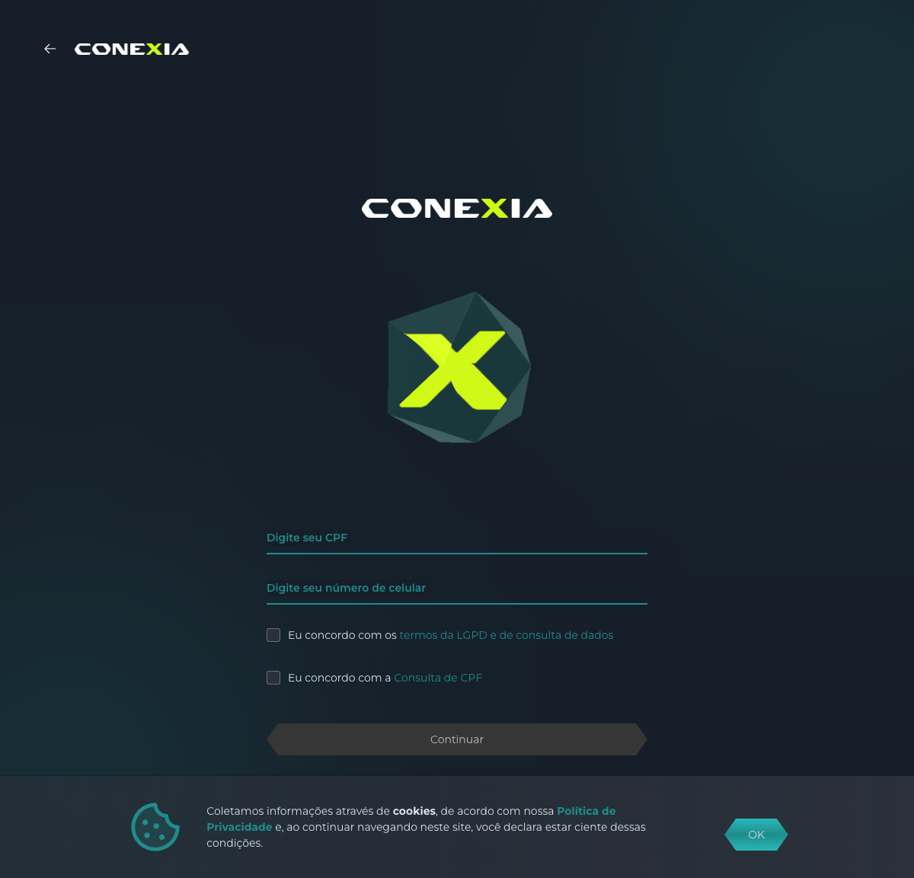
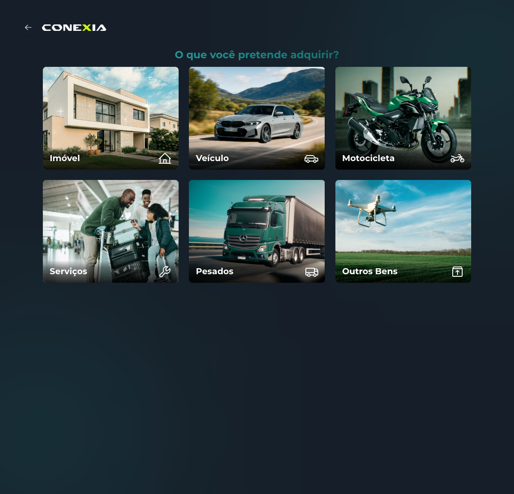
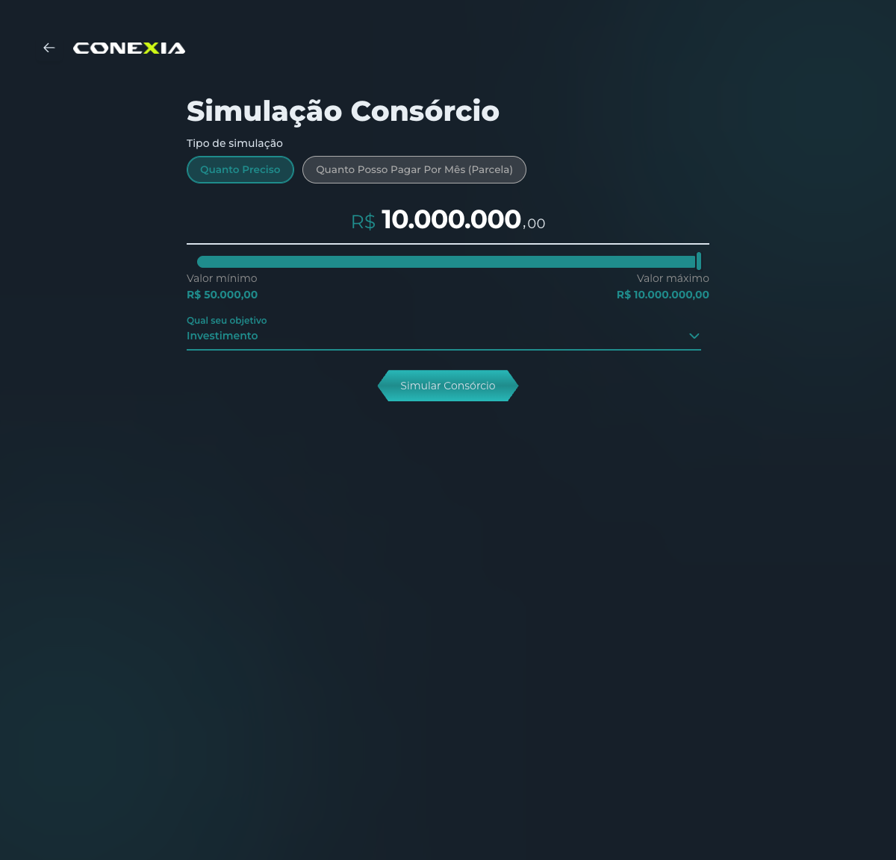
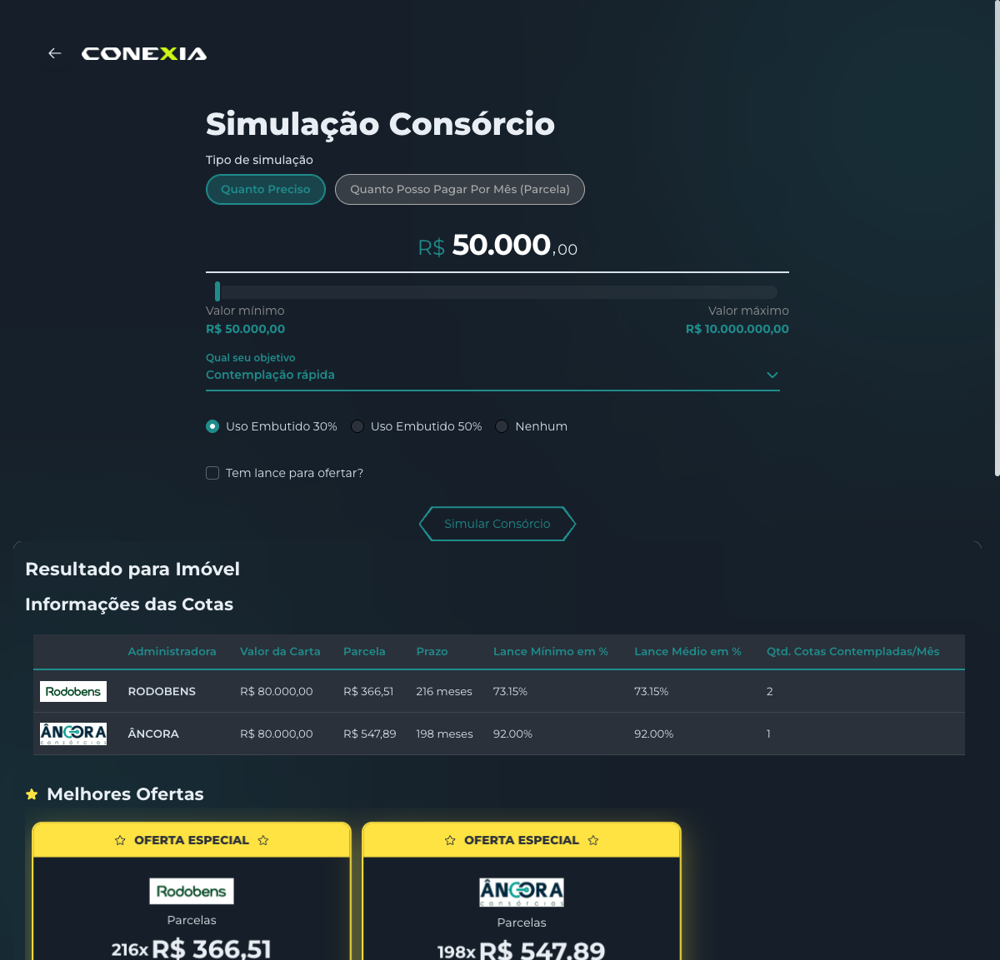
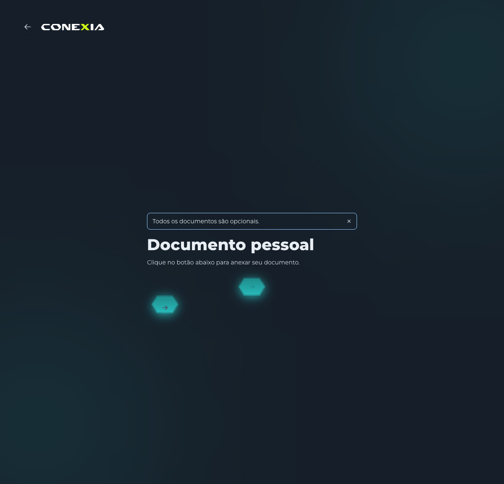
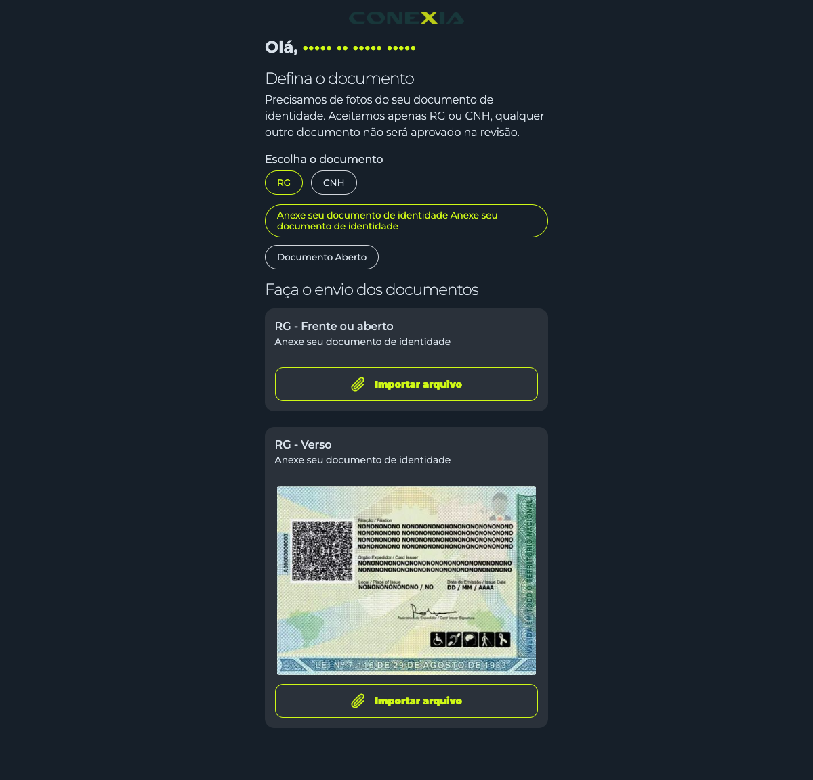

Engenharia reversa do simulador, mapeamento tela-a-API, varredura por segmento e duas propostas de jornada de cliente — web e WhatsApp.
Quatro frentes em paralelo pra entender a integração antes de propor arquitetura.
API de Parceiro (Postman oficial) e Self-Contract (do simulador). Documentamos cada endpoint, payload e resposta.
Captura de tela-a-tela com print + chamada HTTP correspondente. Mostramos o fluxo real, não a teoria.
Imóvel · Auto · Moto · Pesados · Serviços · Outros bens — todos com ofertas reais coletadas via API.
Protótipos hi-fi: chat da plataforma (web) + WhatsApp nativo melhorado — com a tensão Bevi/Aja resolvida.
A Bevi é uma camada de orquestração da AGX Software/CONEXIA (CreditHub) que distribui propostas a várias administradoras de consórcio.
RPC via service_id. É o trilho da collection Postman oficial. Cobre simulação, criar proposta, escolher oferta, anexar documentos.
choose_offer (out-of-app)É a API consumida pelo simulador white-label deles (proposta.uxvision.tech). Rotas /unauth/..., identificadas por CPF + fingerprint do device.
Para validar o que a API faz na prática e o que ela realmente retorna, navegamos o simulador deles ao vivo (Playwright) capturando print + tráfego de rede em cada passo. As próximas 6 lâminas mostram o mapeamento direto.
CPF + LGPD · tratamento de 409 (proposta em andamento)
seleção de segmento entre os 6 disponíveis
valor · objetivo · lance embutido
múltiplas administradoras com shape rico
identidade, endereço, dados — opcionais
único redirect externo do fluxo

{
"cpf": "***********",
"celular": "...",
"lgpd": { "aceite": true },
"consultarDados": true,
"ignoreOngoingProposals": true
}

{
"data": { "segmentResource": [
"AUTOS", "IMOVEL", "MOTOS",
"OUTROS BENS", "PESADOS", "SERVICOS"
] }
}
{ "productType": "AUTOS" } // IMOVEL | MOTOS | PESADOS | SERVICOS | OUTROS BENS

{
"simulationType": "TOTAL_VALUE", // ou INSTALLMENT_VALUE
"simulationValue": 30000,
"objective": "FAST_APPROVAL", // ou INVESTMENT
"embeddedPercentage": "30" // "30" | "50" | sem embutido
}

{ "data": { "data": { "offers": [{
"bank": "ÂNCORA", "group": "462", "term": 98,
"finalValue": 54000, "importedInstallmentValue": 703.64,
"adminFee": 0.18, "reserveFundFee": 0.02,
"adjustmentType": "IGPM",
"bidPaymentMode": "EMBEDDED", "embeddedBid": 16200,
"commission": { "totalRatePercent": "5,00" },
"proximaAssembleia": "2026-...",
"type": "SPECIAL_OFFER"
/* + 40 campos: seguro, fundo, prazo p/ contemplação, ... */
}, ... ] } } }

/update-step/{hash}/step/documentoPessoal
/update-step/{hash}/step/dadosDoDocumentoDeIdentidade
/update-step/{hash}/step/endereco
/update-step/{hash}/step/comprovanteDeEndereco
/update-step/{hash}/step/waitingForUniqueCode // finaliza

O upload de arquivos (foto do RG/CNH) sempre redireciona pro portal AGX. KYC textual é inline; só o arquivo sai. Isso é uma limitação real da integração — qualquer jornada precisa lidar com isso explicitamente.
Na proposta de jornada, transformamos esse ponto na única transição multicanal honesta — não tentamos esconder.
Mesma proposta, lance embutido 30%, objetivo "contemplação rápida". Dados brutos por segmento em assets/segmentos/<tipo>/offers.json.
| Segmento | Pedido | Ofertas | Administradoras | Correção | Adm | Fundo | Comissão |
|---|---|---|---|---|---|---|---|
| 🏠 Imóvel | R$ 50.000 | 3 | Rodobens · Âncora | INCC | 26–29% | 0–2% | 3,5–5% |
| 🚗 Veículo + líquido | R$ 30.000 | 7 | Itaú · Âncora · BB | IPCA + IGPM | 14–27% | 2–3% | 3,5–5% |
| 🏍️ Motocicleta solo | R$ 25.000 | 1 | Canopus (exclusivo) | IPCA | 21% | 0% | 6% |
| 🚛 Pesados | R$ 100.000 | 2 | só Itaú | IPCA + PRÉ-FIXADO 3% | 20% | 2% | 3,5% |
| 🛠️ Serviços | R$ 20.000 | 1 | só Âncora | IGPM | 35% | 5% | 5% |
| 📦 Outros bens | R$ 20.000 | 2 | só Âncora | não possui | 16–22% | 0% | 5% |
Padrões que emergiram da varredura — cada um vira decisão arquitetural.
Auto tem 7 ofertas; Serviços e Moto têm 1. A UX precisa cobrir "muitas opções" (curar) e "uma só" (fallback honesto).
Canopus só moto, Rodobens só imóvel, BB só auto, Itaú em auto+pesados. Âncora é transversal. Recomendação não pode ser catálogo único.
INCC, IPCA, IGPM, PRÉ-FIXADO 3%, e sem correção — todos no mesmo parceiro. Agente lê adjustmentType da oferta (CDC art. 37).
2,5× de variação. Comparabilidade entre segmentos exige normalização por custo efetivo, não só parcela.
Sempre EMBEDDED, sempre 30% do crédito. Valida o diferencial nativo do Aja — cobre toda a vitrine sem exceção.
3,5% a 6%. Itaú/Rodobens/BB cobram 3,5%; Âncora 5%; Canopus moto 6%. Modelo de receita aberto — pricing já está mapeado.
Pontos onde a integração, do jeito que está hoje, conflita com a tese de produto do Aja.
A Bevi é proposta-first — exige CPF antes de qualquer simulação. Conflita com o "sem formulário" do Aja, que prega exploração livre.
Nossa proposta de jornada resolve isso transformando o CPF num momento de upgrade. Slide 15.
A "API de Parceiro" (trilho A) abre consortiumProposalLink em nova aba ao escolher oferta — mas o trilho self-contract prova que inline é tecnicamente possível. Vale negociar.
Anexar documento sempre redireciona pro portal CONEXIA (conexia.agxsoftware.com). Endpoint get_document_upload_links da collection retorna 501.
Temos uma lista de 14 perguntas técnicas pro parceiro Bevi, documentada em bevi-consorcio-aderencia.md — pronta pra disparar quando vocês quiserem.
Pra a gente avançar com adapter, contratos de tela e prazo realista, precisamos partir de uma jornada acordada — quem decide cada etapa, o que é tela, o que é chat, onde entra cada artifact.
A tensão central — Bevi exige CPF antes de simular, Aja prega "sem formulário" — vira uma vantagem de UX se a gente reordenar.
Usuário passa pela descoberta e pelos 3 gates (experiência · prazo · lance) e vê simulação indicativa (médias de mercado). Sem CPF, sem fricção. Preserva o "sem formulário".
No pico de intenção ("quero ver as reais"), o Aja pede CPF uma única vez, enquadrado como destravar as cartas reais das administradoras. Aí entra a Bevi → ofertas reais.
O atrito do CPF deixa de ser barreira de entrada e vira momento de upgrade. Materializamos isso em dois protótipos — web e WhatsApp — nas próximas 2 lâminas.
Mockup hi-fi mostrando a sequência completa, do empty state ao opt-in WhatsApp, com os artifacts reais do produto (gates em chips, value picker, comparação, recomendação com score).
Design fiel ao app: fonte Geist, paleta neutra do globals.css, bolhas e cards reais.
Em componentes nativos da Meta — reply buttons, list message e WhatsApp Flows — com a única saída externa (upload de doc → CONEXIA) explícita e honesta.
Limites Meta respeitados: reply buttons ≤3, paleta WhatsApp oficial, Flows como bottom-sheet.